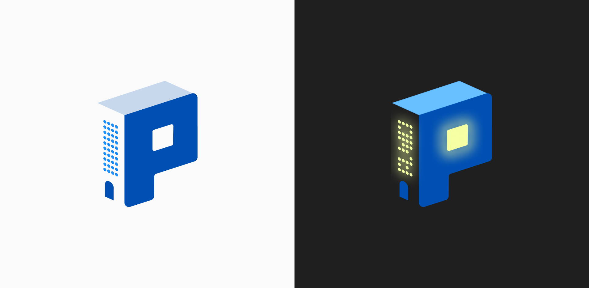
Understanding the User
-
User Surveys
-
User Interviews
-
Service Blueprint
-
User Journey Map
User Research Summary
To gain a deeper understanding of user frustrations, needs, and workflows, we conducted a series of interviews and surveys with property managers. The goal was to uncover how teams currently manage daily operations and identify opportunities to improve how they plan, prioritize tasks, and anticipate upcoming maintenance and deadlines.
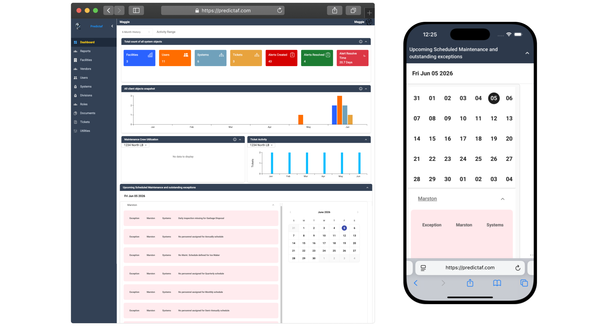
1. Reactive Operations
Teams chase urgent alerts and forget lower-priority work.
2. Lack of Prioritization
Lots of info, but little guidance on what to do first—plus no space for quick notes/planning..
3. Fragmented Scheduling
Maintenance schedules, inspections, and deadlines were spread across multiple views, making it difficult to quickly understand upcoming responsibilities and coordinate work.
4. No Planning View
Users lacked a centralized view to balance today's tasks with upcoming maintenance needs. Without clear visibility into future deadlines and service windows, teams were often forced into reactive decision-making..
1_
Reactive Operations
Teams spent most of their time responding to urgent issues, leaving little room for preventative planning. Lower-priority tasks were often overlooked as new problems emerged throughout the day.
2_
Lack of Prioritization
Operational data was available, but users struggled to determine what required attention first. Existing tools lacked a dedicated space to organize work, capture context, and plan proactively.
3_
Fragmented Scheduling
Maintenance schedules, inspections, and deadlines were spread across multiple views, making it difficult to quickly understand upcoming responsibilities and coordinate work.
4_
No Planning View
Users lacked a centralized view to balance today's tasks with upcoming maintenance needs. Without clear visibility into future deadlines and service windows, teams were often forced into reactive decision-making.
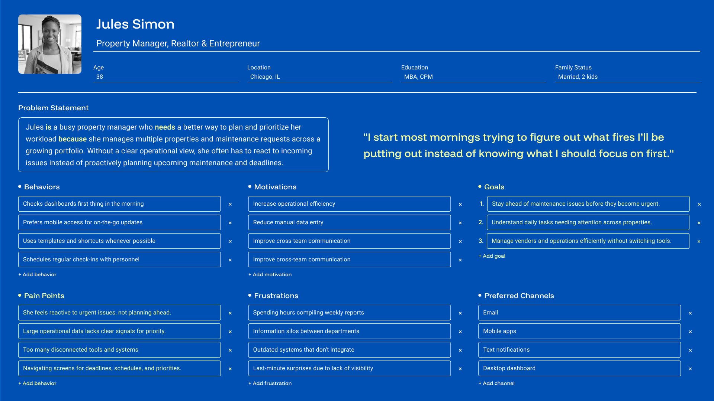
Service Blueprint
The persona helped define the needs, goals, and frustrations of our target user, while the service blueprint expanded that understanding by mapping the end-to-end workflow required to achieve those goals. By visualizing the interactions between users, systems, and operational processes, we were able to identify where breakdowns occurred and uncover opportunities to better support proactive maintenance planning.
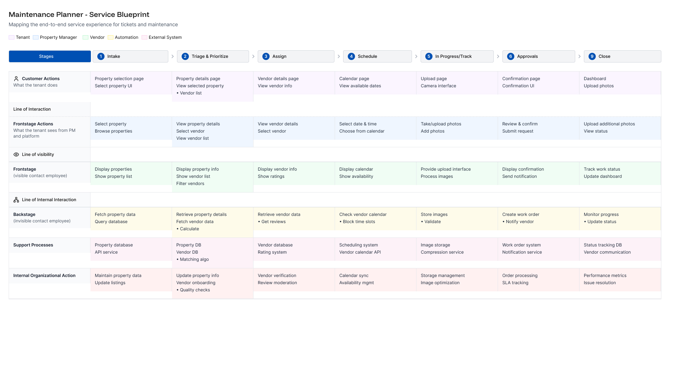
Begin The Design
User Flows,
Paper Wireframes,
Digital Wireframes,
Lofi Prototypes,
& Usability Studies
User Flows
Mapping user flows helped identify friction points in the existing process and revealed opportunities to streamline how managers prioritize tasks, plan their day, and stay ahead of upcoming maintenance needs.
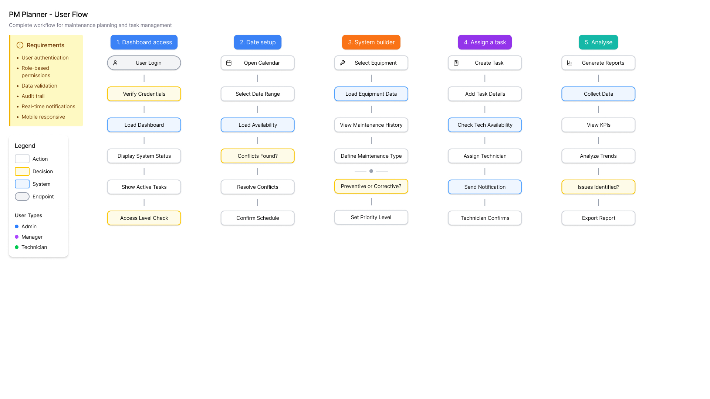
Paper Wireframes
To simplify the planners fundamental structure and intended functionality, paper wireframes were used to assist in the process. Focusing on the core features identified during user research, I quickly sketched iterations.
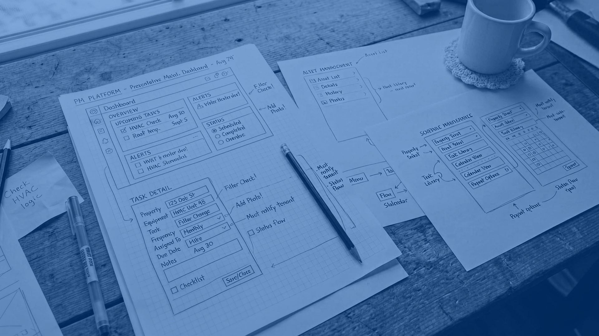
Digital Wireframes
Using the paper wireframes, I began creating low-fidelity wireframes. After several iterations, I was able to delineate the ones that best represented the user flow and met the user needs.
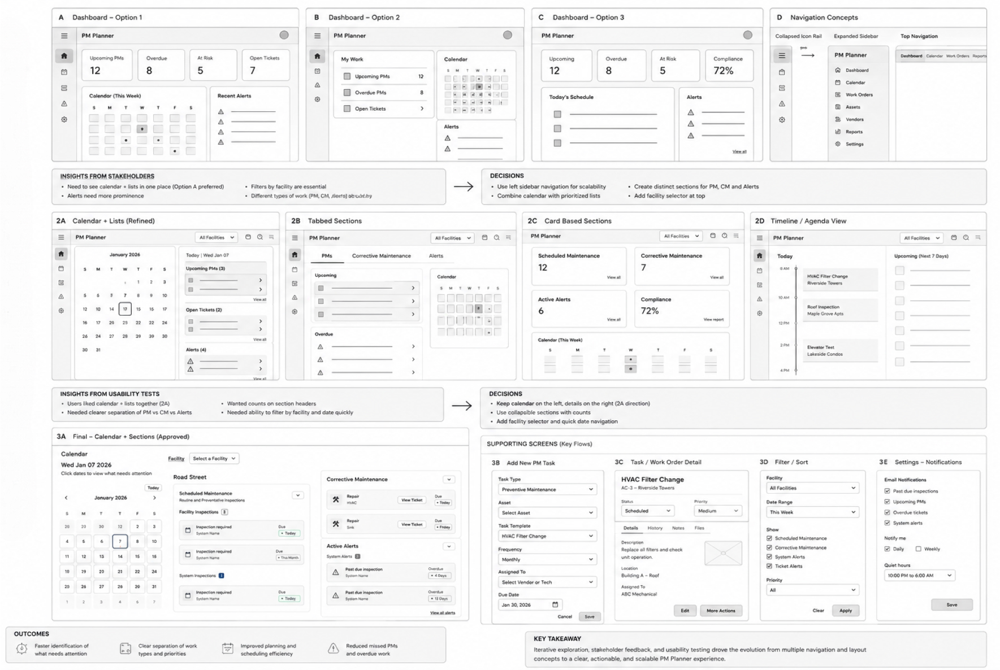
Usability Study
Study Type:
Moderated usability study
Location:
In Person & Virtual
Participants:
5 participants
Length:
30-40 minutes
1. Countdown Signaling
Participants expressed a need for more visual indicators for high-level tasks. They wanted to see countdowns or status signals that highlight upcoming deadlines, inspections, or maintenance events, enabling them to plan proactively rather than reactively.
2. Actionable Workflows
Users requested the ability to link high-priority items directly to actionable tickets or workflows. This would allow them to move seamlessly from observing a task to executing the necessary action, reducing friction and context switching.
3. Personal Tasks
Managers wanted a space for personal notes, to-dos, or reminders that aren’t captured in the system data. This allows them to track intuition-based tasks or observations that are unique to their workflow.
4. Intelligent Prioritization
Maintenance teams struggled to separate high-impact work from operational noise. The goal was to help users prioritize tasks, anticipate issues, and make more proactive decisions.
Usability Study
Study Type:
Moderated usability study
Location:
In Person & Virtual
Participants:
5 participants
Length:
30-40 minutes
1_
Countdown Signaling
Participants expressed a need for more visual indicators for high-level tasks. They wanted to see countdowns or status signals that highlight upcoming deadlines, inspections, or maintenance events, enabling them to plan proactively rather than reactively.
2_
Actionable Workflows
Users requested the ability to link high-priority items directly to actionable tickets or workflows. This would allow them to move seamlessly from observing a task to executing the necessary action, reducing friction and context switching.
3_
Personal Tasks
Managers wanted a space for personal notes, to-dos, or reminders that aren’t captured in the system data. This allows them to track intuition-based tasks or observations that are unique to their workflow.
4_
Intelligent Prioritization
Maintenance teams struggled to separate high-impact work from operational noise. The goal was to help users prioritize tasks, anticipate issues, and make more proactive decisions.
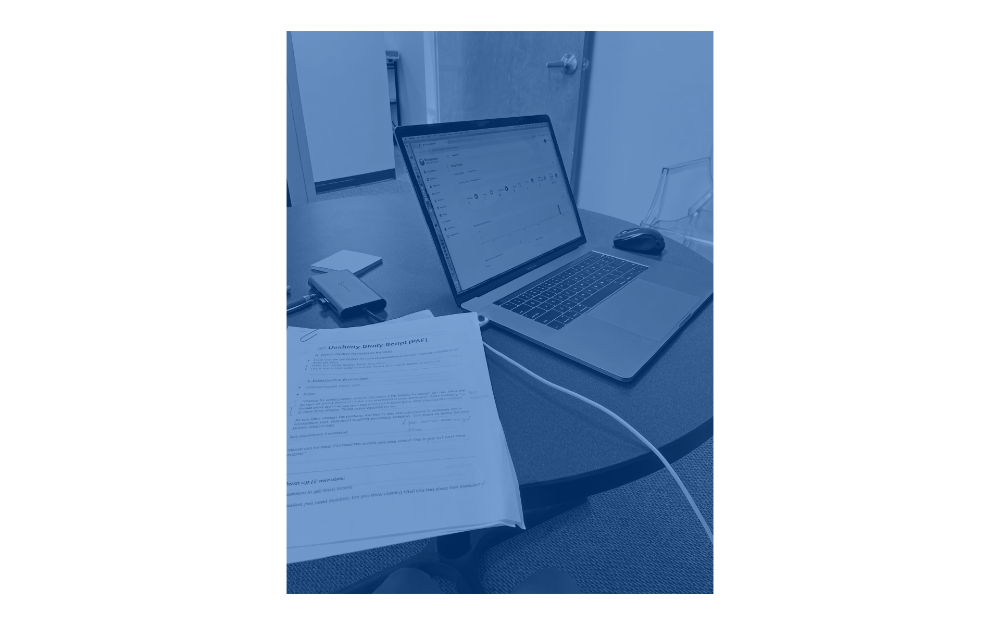
Refine the Design
Components, Mockups, High-fidelity Prototypes, Accessibility Considerations
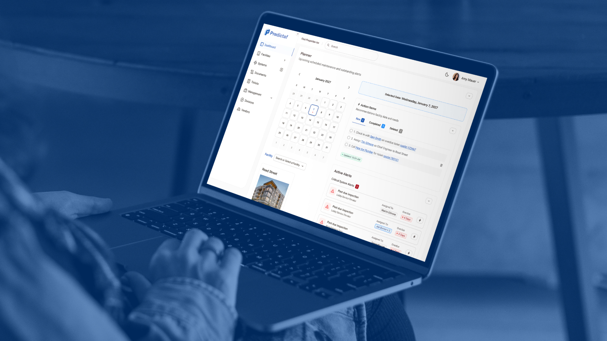
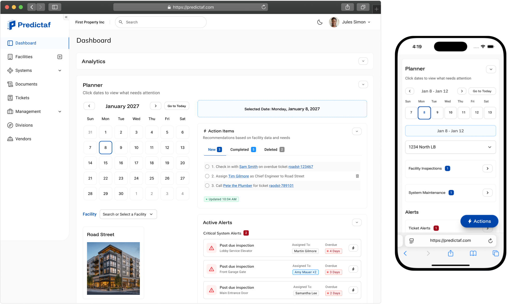
Mockups
Applying insights from usability testing, the Planner experience was refined to better support proactive maintenance planning. Enhancements focused on improving visibility, prioritization, and decision-making through clearer countdown indicators, integrated personal notes, intelligent prioritization signals, and direct access to recommended actions for resolving maintenance issues.
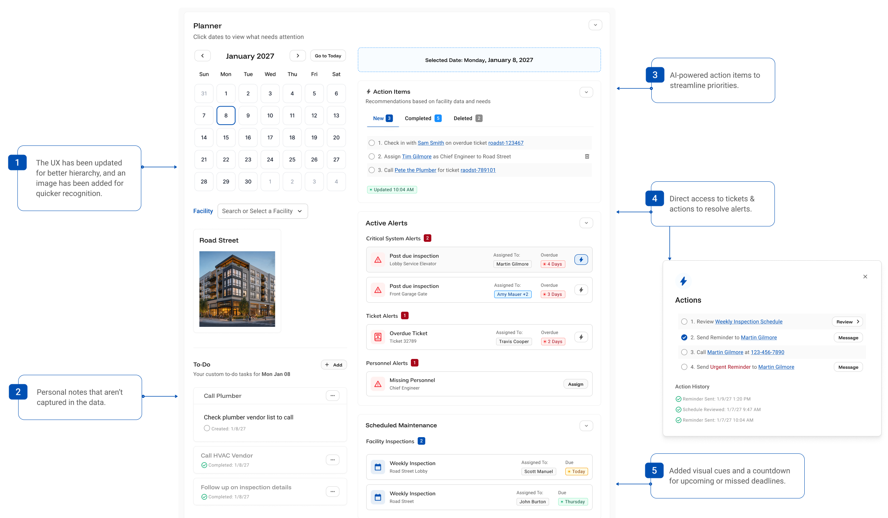
Interactive Prototype
Build the Design
Prompt Instructions, Build & Test, Refinement & Review, Production Release
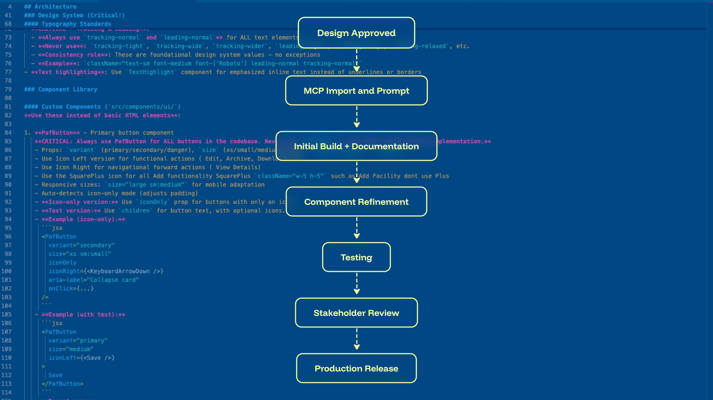
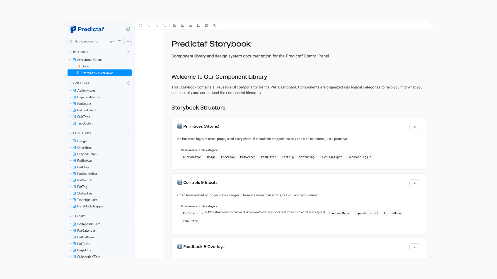
1.
I meticulously reviewed the product screens to ensure compliance with the Web Content Accessibility Guidelines (WCAG) Level AA standards. This involved a thorough examination of various elements such as color contrast, text size, keyboard navigation, and alternative text for images, among others.
2.
Jakarta Sans is the exclusive font family utilized across both platform design and marketing materials. Opting for sans-serif fonts prioritizes readability, ensuring effortless comprehension for users.
3.
I implemented a structured text hierarchy throughout the application, helping users to easily distinguish between different sections and information presented on the screen.
1_
All interfaces were designed and reviewed against WCAG 2.1 AA accessibility standards, with a focus on color contrast, typography, keyboard navigation, and overall usability to ensure an inclusive experience for all users.
2_
A streamlined typography system utilizing two font families was established across both the platform and marketing materials. Clear distinctions between headings and body text improve readability, consistency, and brand recognition.
3_
A structured text and layout hierarchy was implemented throughout the application to help users quickly scan content, understand priorities, and navigate complex information with confidence.